Lemon Citrine — 106.52 ct Portuguese Cut
A substantial 32 mm Portuguese-cut round in bright lemon yellow.
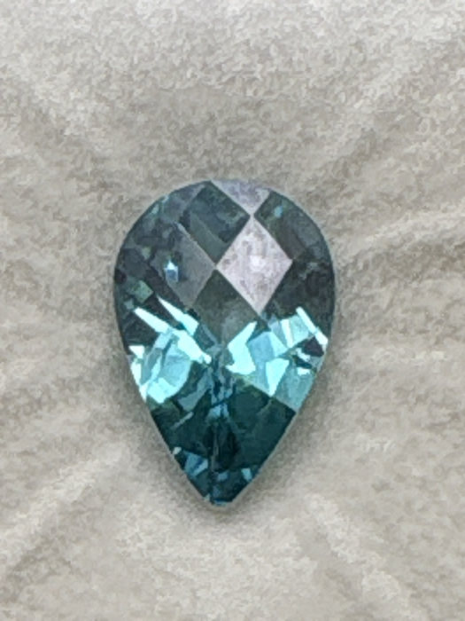
Ceylon “Nickel Topaz” — 5.10 ct Pear
Teal blue-green pear, 10 x 15 mm, labeled 5.10 ct.
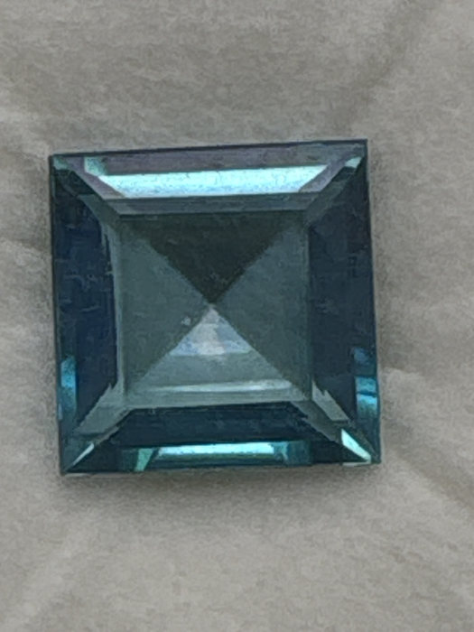
Ceylon “Nickel Topaz” — 9.45 ct Square Step Cut
Larger teal blue-green companion stone, square step cut, labeled 9.45 ct.
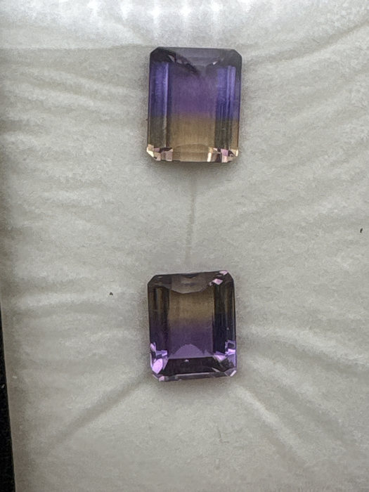
Ametrine — Matched Pair, Emerald Cut
Two emerald-cut ametrines with the classic purple-to-gold split, roughly 9 x 12 mm each.
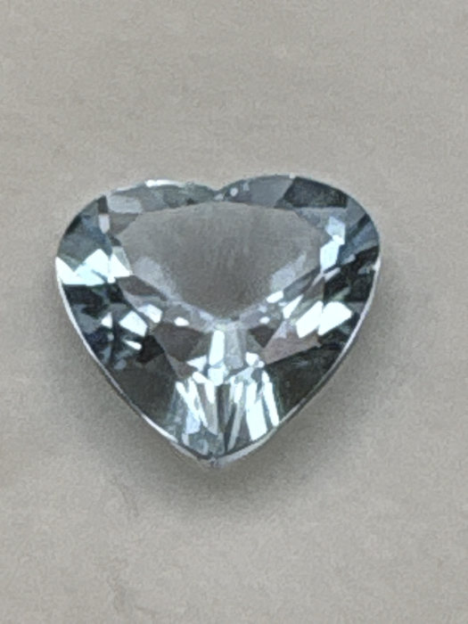
Aquamarine — 3.60 ct Heart Cut, Labeled Santa Maria
An 11 mm light blue heart cut, labeled “Top Gem” Santa Maria origin.

Pale Green Stone — Labeled “Swastone,” 4.90 ct
Mint-green cushion/shield cut with a notched corner; label name is not a recognized gem term.
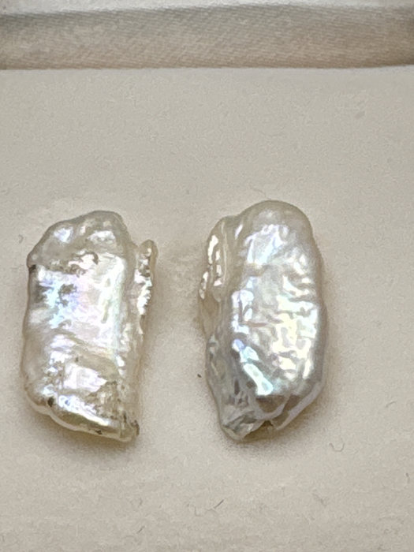
Australian Crystal Opal — Two Freeform Pieces
Two white-body opal pieces with strong green, blue and pink play-of-color.
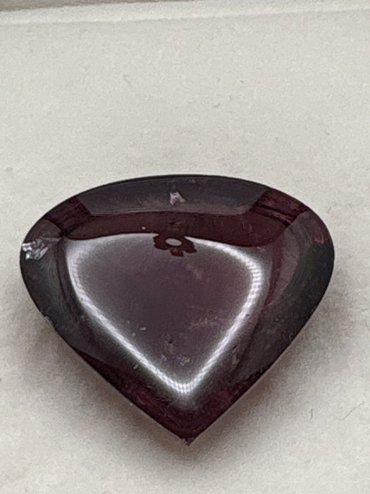
Tourmaline Cabochon — 23.25 ct
A large deep plum-purple triangular cabochon, labeled 23.25 ct.
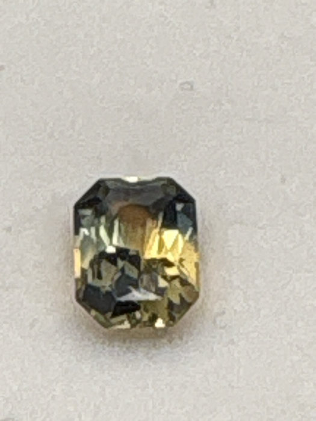
Multi-Color Sapphire — 0.82 ct
A small cut-cornered square sapphire in pale yellow-green champagne with color-shift flashes.
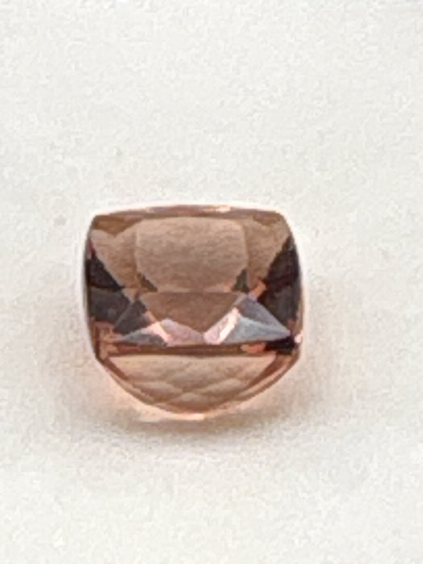
Red Wine Fluorite — 4.48 ct Cushion Cut
A burgundy cushion-cut fluorite, labeled 4.48 ct — a soft stone to handle with care.
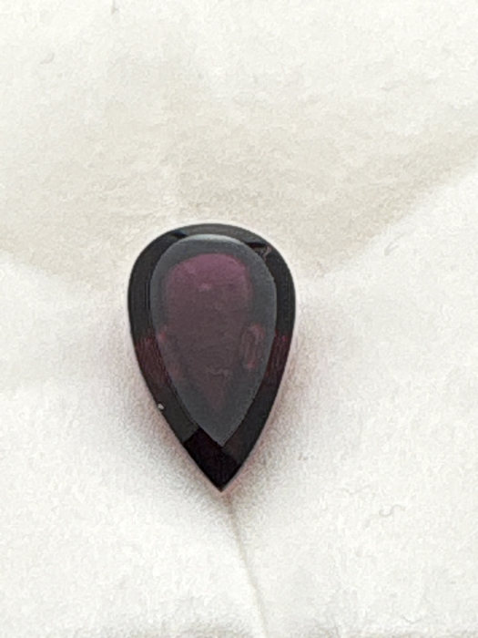
Tourmaline Cabochon — 4.05 ct Pear
A near-opaque blackish-maroon pear cabochon that glows deep red-purple in strong light.

Carved Intaglio — Clear Stone, Material Unidentified
An oval cabochon carved with a leaping hare; the box label never names the material.

Russian Demantoid Garnet — “Grab Bag” Parcel, 20+ Stones
A bulk parcel of roughly twenty-plus small green garnets plus one rough fragment.

Bi-Color Tourmaline — 5.78 ct
Smoky brown-grey with pinkish-red flashes across the facets.

Cat's Eye Chrysoberyl — Labeled Alexandrite, 1.10 ct
A dark oval cabochon with a clear chatoyant eye; the alexandrite claim is unverified.
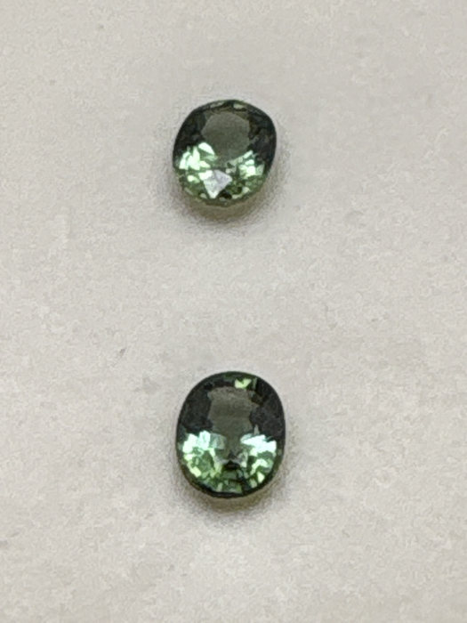
Green Tourmaline — Pair of Ovals
Two olive to yellowish-green oval tourmalines in one box.
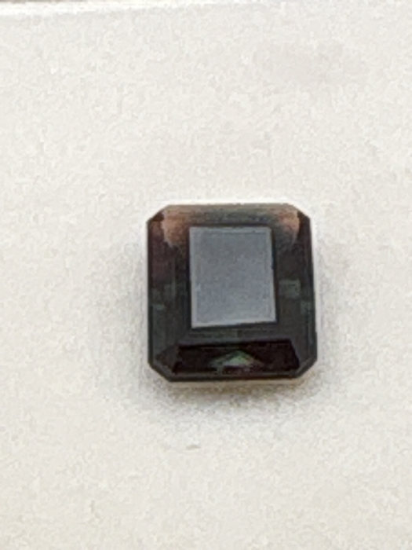
Andesine — 1.80 ct Emerald Cut, Color-Change
A 9 x 7 mm emerald cut flashing green and copper-red by turns.
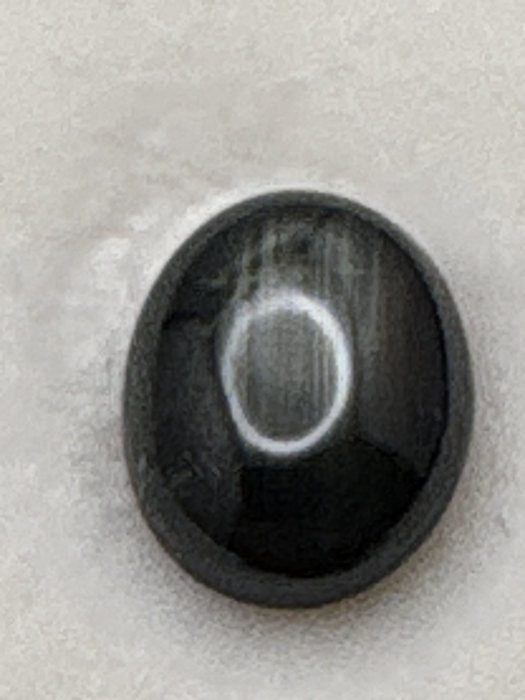
Black Star Sapphire — 3.07 ct Oval Cabochon
An 8 x 10 mm black cabochon with a clearly visible white star.

Imperial Topaz — Pair of 5 x 7 mm Ovals
Two golden peach-orange oval topaz, roughly 5 x 7 mm each.

Rhodolite Garnet — Lot of Six 6 x 8 mm Ovals
Six raspberry-purple garnet ovals, roughly 1.65 ct each.

Aquamarine Melee — Parcel of ~40 Round 4 mm Stones
A parcel of roughly forty light blue 4 mm rounds, about 0.20 ct each.

Aquamarine Melee — Second Parcel, ~30–35 Round 4 mm Stones
A second, slightly smaller parcel of light blue 4 mm aquamarine rounds.
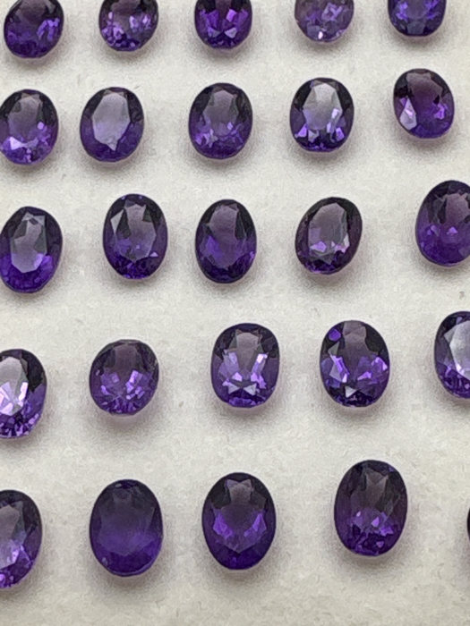
Purple Oval Lot — 25 Stones, Consistent with Amethyst
Twenty-five matching medium-purple ovals in a 5 x 5 grid.
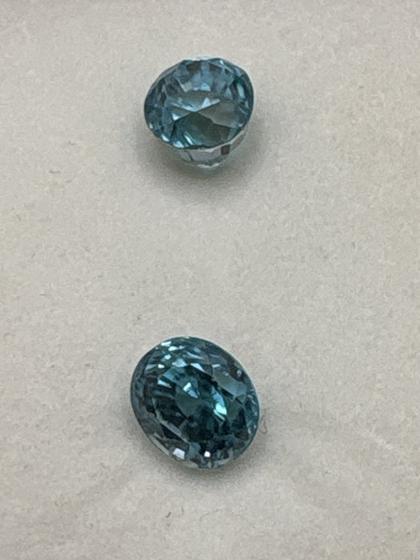
Blue Zircon — Pair of Round Brilliants
Two teal blue-green zircon rounds in one box.

Ethiopian Opal — 8 x 10 mm Oval Cabochon
A white-cream cabochon with strong green, orange and blue play-of-color.

Bixbite (Red Beryl) — Emerald Cut, As Labeled
A small deep red emerald cut labeled as red beryl — rare material, unverified.
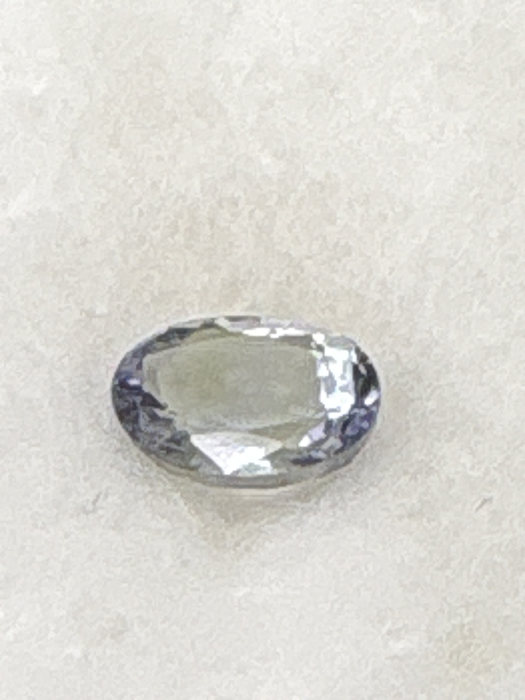
Pale Oval — Labeled Natural Tanzanite, 1.10 ct
Labeled tanzanite at 5.5 x 7.5 mm, but the stone photographs near-colorless.

Nigerian Green Tourmaline — Pair of 7 mm Rounds
Two pale olive-green tourmaline rounds, 7 mm each.

Spinel Crystals — Rough Lot of ~11–12 Pieces
A dozen small raw purple-mauve crystals, uncut natural form.
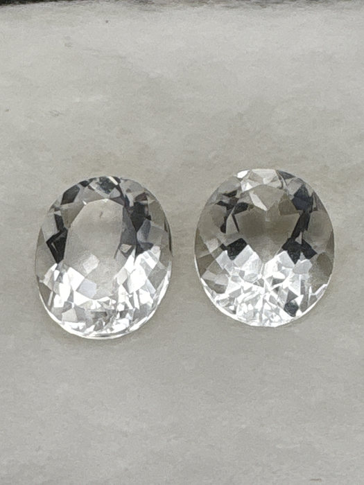
Petalite — Pair of 9 x 11 mm Ovals
Two colorless oval petalite — an uncommon gem in the retail trade.
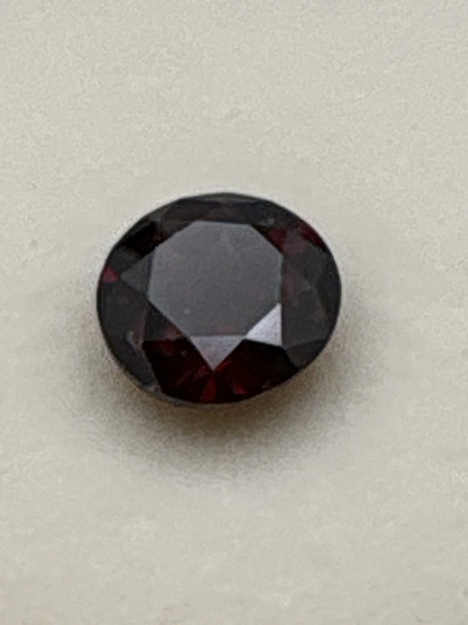
Red Zircon — 4.25 ct Oval Cushion
A deep brownish-red zircon, dark enough to read near-black in places.
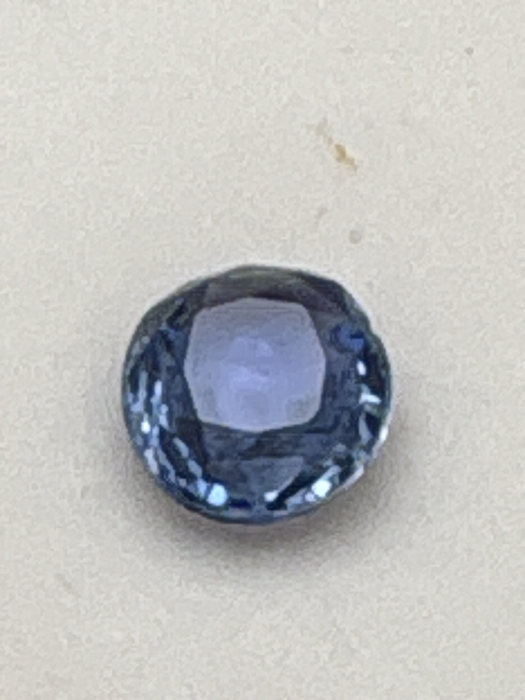
Blue Sapphire — 2.29 ct Round
A pale lavender-blue sapphire, 7 x 5.5 mm.

Color-Change Garnet — 1.92 ct Oval
A 6 x 7.5 mm oval labeled color-change; photographs brownish-pink.
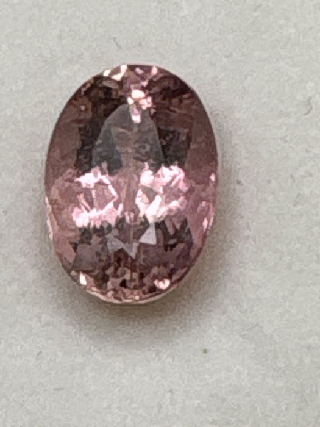
Pink Tourmaline — 4.61 ct Oval
A clean single pink oval, weight confirmed twice on the box.

Color-Change Garnet — Pair of Rounds
Two round garnets labeled color-change; one reads pinker, one more amber.
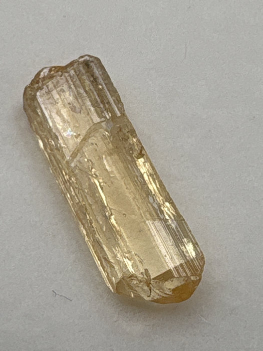
Imperial Topaz — Rough Crystal
A single uncut golden-champagne prismatic crystal.

Two Pear-Cut Stones — Likely Amethyst and Citrine
A lavender pear and a golden-yellow pear; the label names neither.
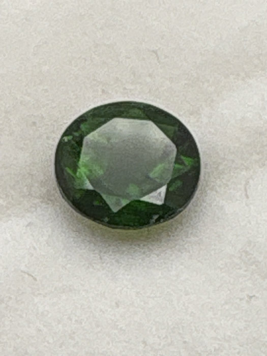
Chrome Diopside — Round Mixed Cut
A deep green chrome diopside, a chromium-colored gem in the pyroxene family.

Demantoid Garnet — Rough Crystal, As Labeled
A small uncut olive-green crystal labeled demantoid.

Cuprian Elbaite Tourmaline — Pale Blue Trillion
Copper-bearing tourmaline — the Paraiba family — but in a pale, not neon, blue.
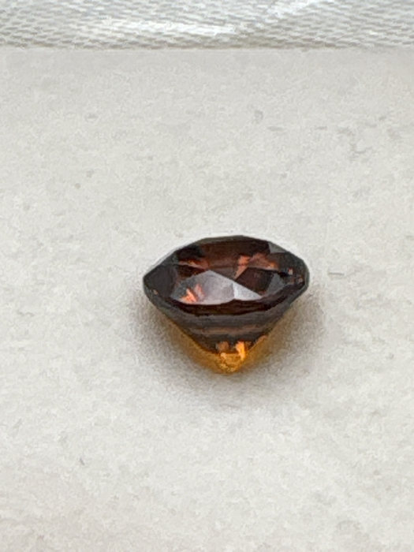
Hyacinth Zircon — 4 ct Marquise
A deep reddish-brown marquise; “hyacinth” is the old trade name for this color.

Mandarin Garnet — 2.97 ct Trillion
A vivid orange 7.3 mm trillion — spessartine garnet at close to three carats.
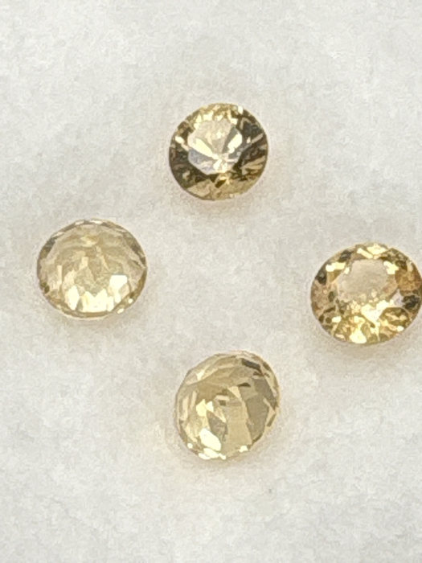
Golden Grossular Garnet — Parcel of Four 5 mm Rounds
Four golden-champagne garnet rounds labeled “Tsavo Golden” — golden, not green.

Riesling Beryl — 11.47 ct Checkerboard Oval
One of the largest stones here: a pale seafoam beryl in a checkerboard cut.

Demantoid Garnet — 0.71 ct Round, As Labeled
A faceted olive-green round labeled demantoid, weight given as a range.

Emerald — 1.15 ct Emerald Cut, As Labeled
A pale green 7.5 x 5.5 mm step cut with the fine inclusions typical of emerald.

Two Small Ovals — Box Label Does Not Match Contents
A grey-violet oval and a pink-red oval; the label describes a different stone entirely.
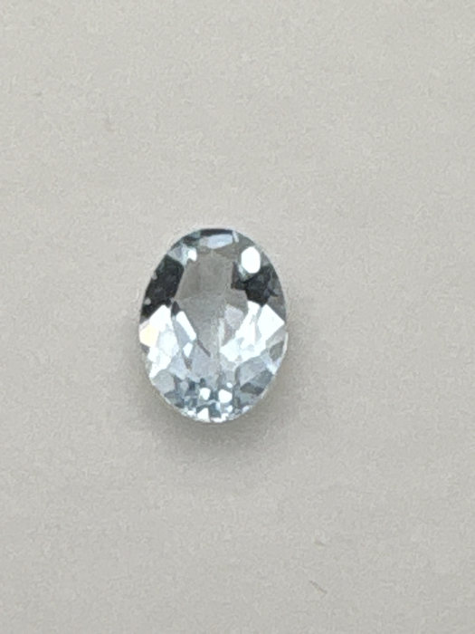
Aquamarine — Pale Blue Oval
A very pale blue oval aquamarine, no weight given on the label.

Green Tourmaline — 3.12 ct Emerald Cut
A deep green elongated step cut, single stone, straightforward.

Pink Tourmaline (Rubellite) — Pair of 6 x 8 mm Ovals
Two rosewood-pink tourmaline ovals, 6 x 8 mm each.
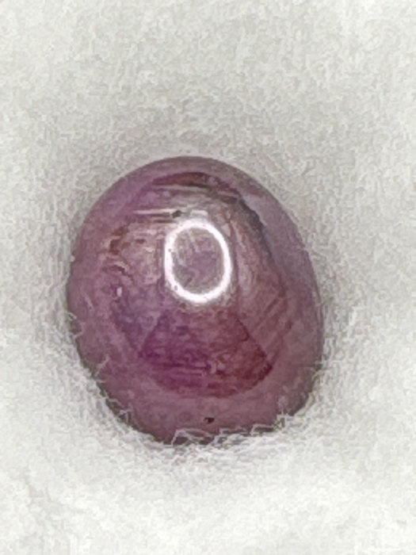
Common Opal — 3.23 ct Lavender Cabochon
A translucent lavender cabochon with no play-of-color.

Green Sphene (Titanite) — Pair of 7 mm Rounds
Two yellowish-green rounds of a specialty gem with more fire than diamond.
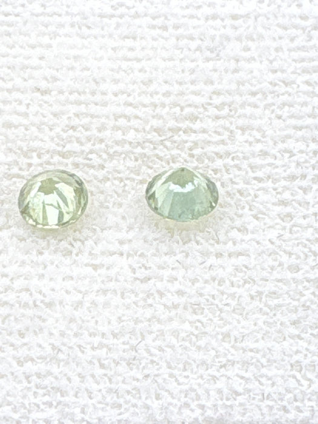
Two Pale Green Rounds — No Label, Unidentified
A matched pair of mint-green rounds with no label information of any kind.
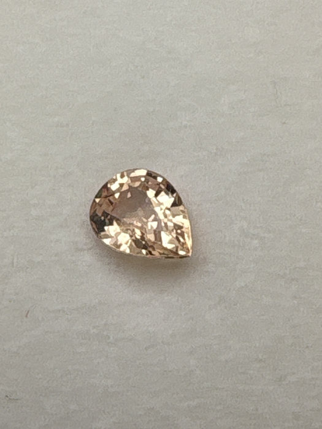
Sapphire — Peachy Pear, Noted as “Probably Padparadscha”
A salmon-peach pear-cut Ceylon sapphire; the padparadscha call is the seller's guess.
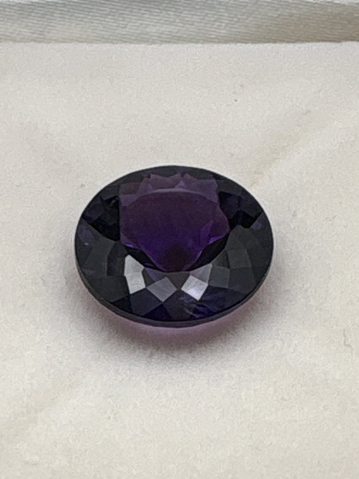
Amethyst — 8.95 ct, 14 mm Checkerboard Round
A deep purple 14 mm round with a checkerboard-faceted crown.
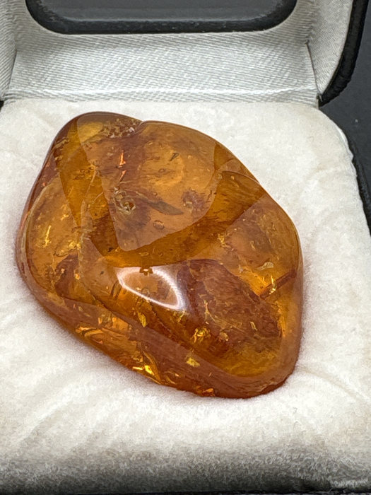
Amber — 36.94 ct Polished Freeform
A translucent orange amber piece with internal flow lines and inclusions.
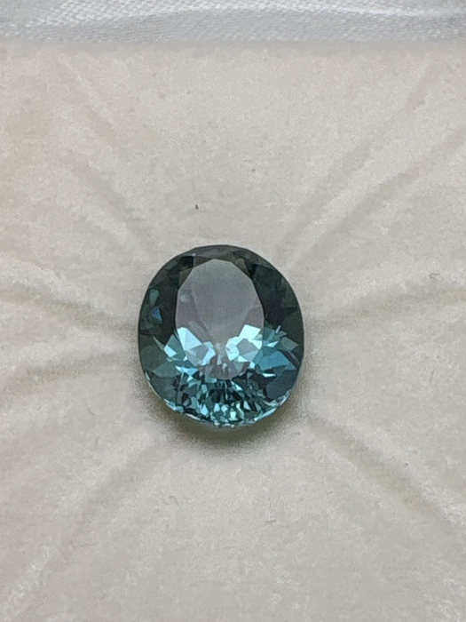
Teal Oval — Two Conflicting Labels, Unidentified
A teal blue-green oval whose box carries two labels, neither matching the stone.
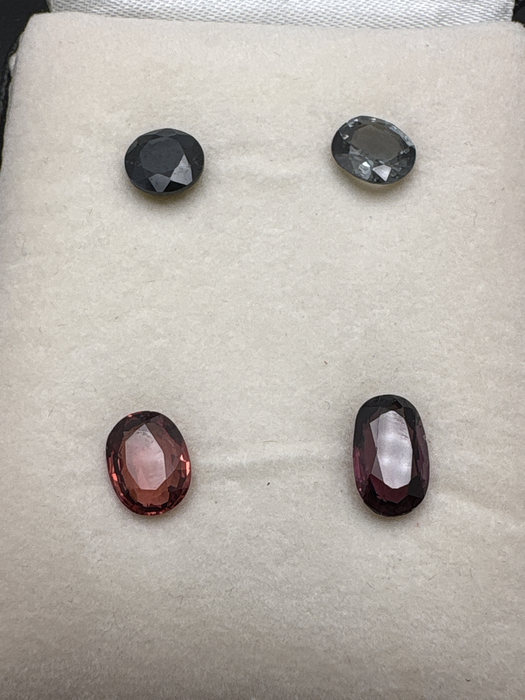
Mixed Spinel — Parcel of Four Stones
Four spinels in grey, plum, black and reddish-brown, about 2.75 ct total.
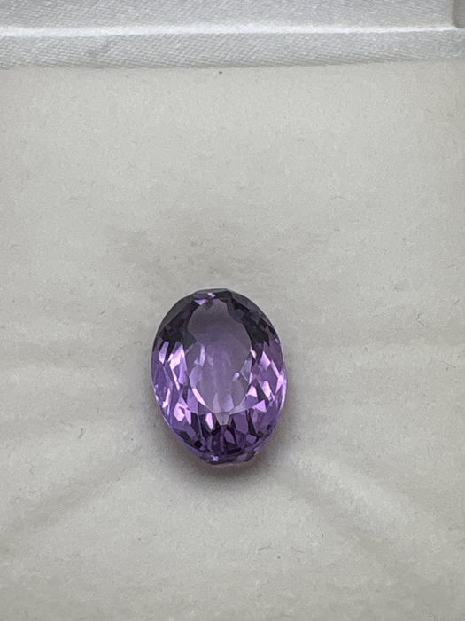
Faceted Lavender Oval — Label Does Not Match, Unidentified
A clear faceted lavender oval; the box is labeled black opal, which it plainly is not.
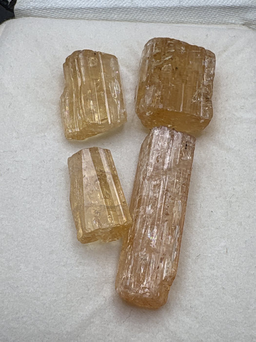
Imperial Topaz Rough — Four Crystals, 100 ct Total
Four uncut peachy-gold topaz crystals, the largest around an inch and a half.
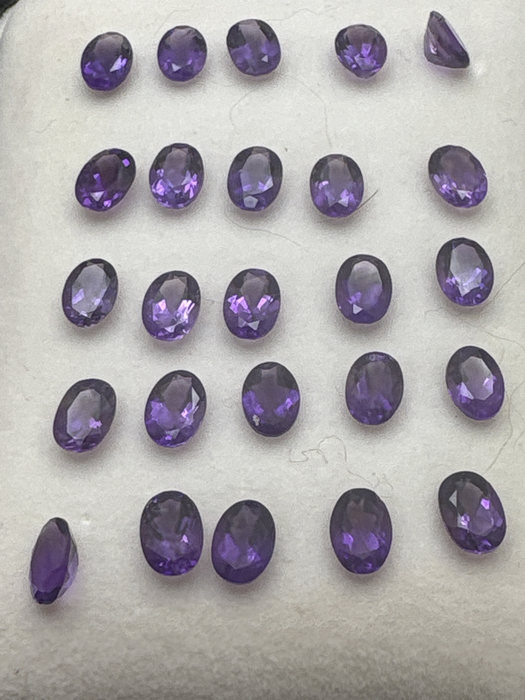
Amethyst Melee — Parcel of ~24 Small Ovals
Two dozen deep purple accent-sized ovals, uniform in color.
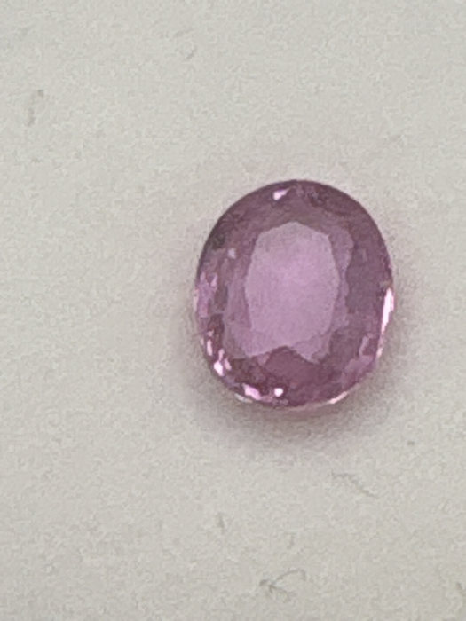
Pink Sapphire — 1.91 ct Oval
A faceted pink-mauve oval; the printed label on the box belongs to something else.
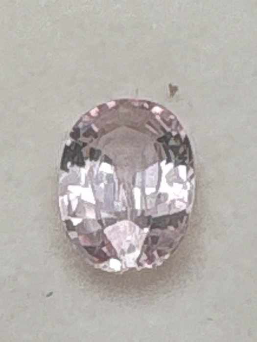
Padparadscha Sapphire — 1.50 ct Oval, As Labeled
A pale pinkish-peach 5.5 x 8 mm oval labeled padparadscha.
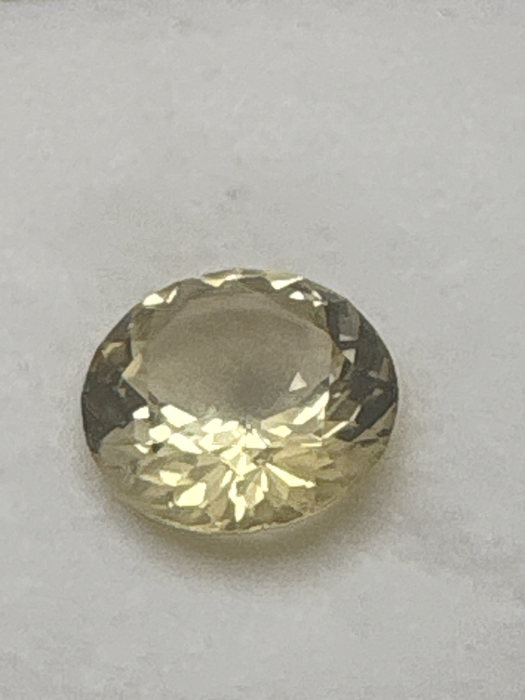
Scapolite — 4.99 ct Round Brilliant
A pale champagne round brilliant of an uncommon collector's gem.

Chrome Tourmaline — 1.60 ct Trillion
A deep green trillion colored by chromium — the same element that colors emerald.
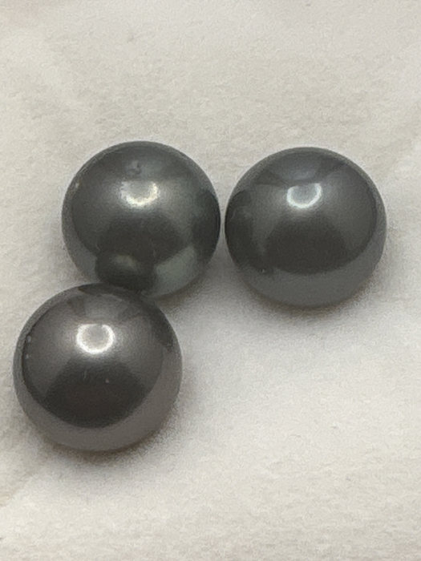
Tahitian Black Pearls — Set of Three 11 mm Rounds
Three loose cultured pearls in dark gunmetal charcoal, 11 mm each.

Ceylon Sapphire — Pale Pink-Lavender Oval
A pale pink-lavender oval sapphire; no reliable weight recorded.

Green Zircon — 2.20 ct Cushion
An olive-forest green 7 x 8 mm cushion of an uncommon zircon variety.
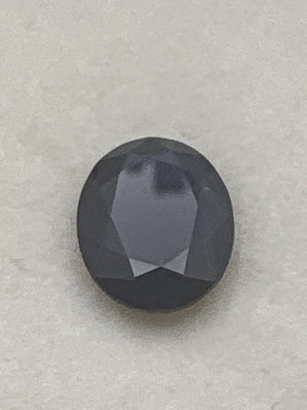
Blue Sapphire — 2.71 ct Oval, Labeled Burmese
A very deep blue 9 x 7 mm oval; the Burmese origin claim is unverified.

Aquamarine — Pair of 8 mm Trillions
Two very pale blue trillion-cut aquamarines, 8 mm each.

Green Tourmaline (Verdelite) — 2.90 ct Round
A muted olive-khaki green round brilliant.
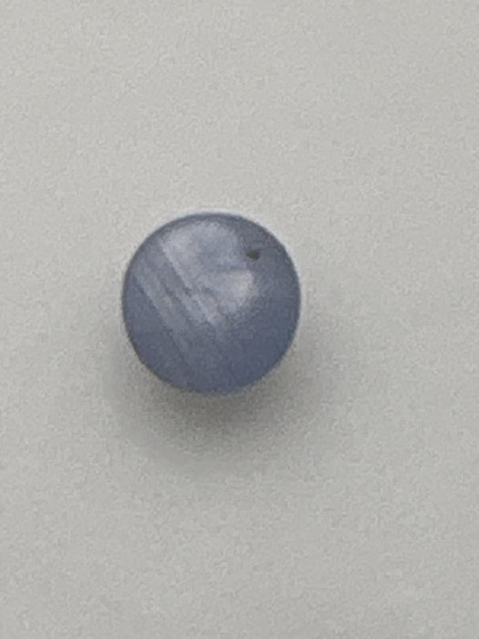
Sapphire Cabochon — Labeled Blue Star, Asterism Unconfirmed
A domed grey-blue cabochon labeled star sapphire; no star visible in the photos.
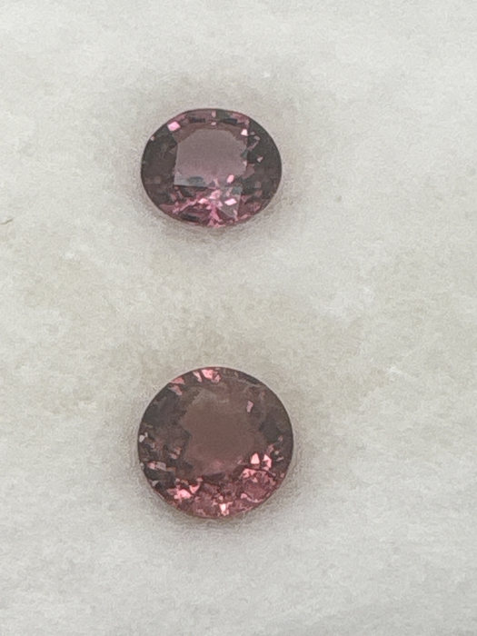
Rubellite Tourmaline — Pair of 7 mm Rounds
Two purplish-pink tourmaline rounds, 7 mm each.

Spinel — Mixed Pair, Labeled Burmese
Two oval spinels of different colors: near-colorless grey and greyish mauve.

Demantoid Garnet — Small Round
A small round garnet labeled demantoid, muted olive rather than vivid green.

Star Garnet — Round Cabochon with Visible Asterism
A near-black domed cabochon showing a clear four-rayed star.
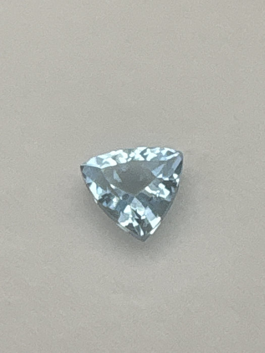
Blue Topaz — Pale Sky Blue Trillion
A pale sky-blue trillion-cut topaz.

Red Zircon — Pair of Cushions
Two deep brownish-red cushion cuts with orange flashes, 2 ct-plus combined.
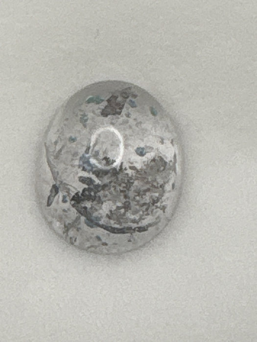
Grey Mottled Cabochon — Label Illegible, Unidentified
A grey-white cabochon with darker mottling; the printed label is defective.

Chrome Diopside — Vivid Green Cushion
A vivid medium-green cushion cut in its natural, untreated color.
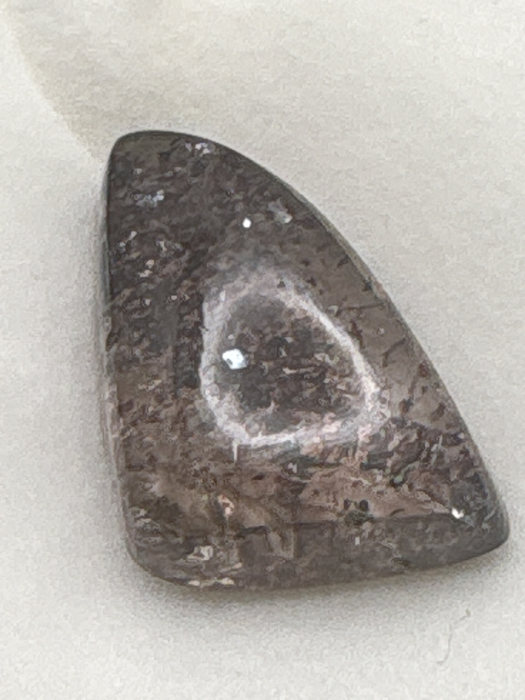
Polished Freeform Slice — Label Does Not Match, Unidentified
A brown-grey freeform slice with a ring pattern; the label reads strawberry quartz.
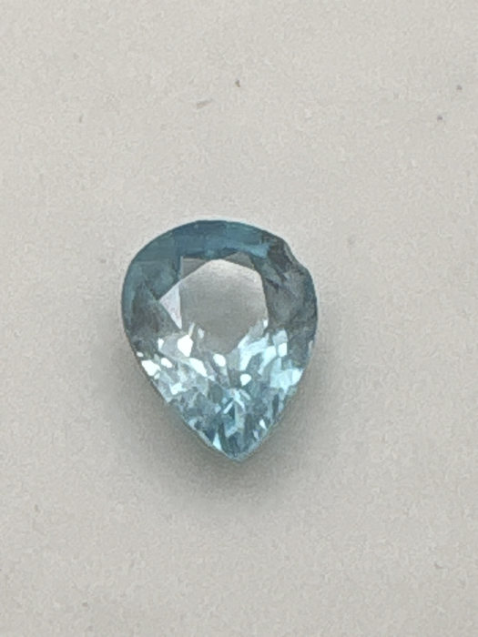
Blue Zircon — Light Blue Pear
A clean light blue pear-cut zircon, label and stone in agreement.
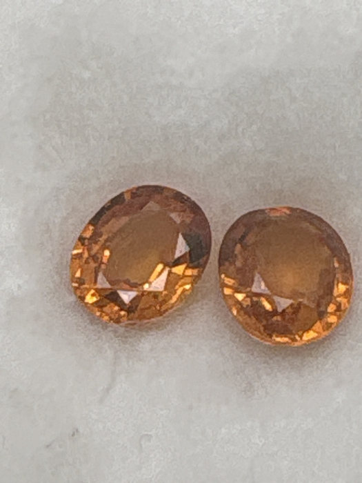
Mandarin Garnet — Pair of Vivid Orange Rounds
Two saturated orange spessartite garnets, round brilliant cut.

Garnet — Matched Set of Four Checkerboard Trillions
Four matching deep brownish-red 8 mm trillions with checkerboard crowns.
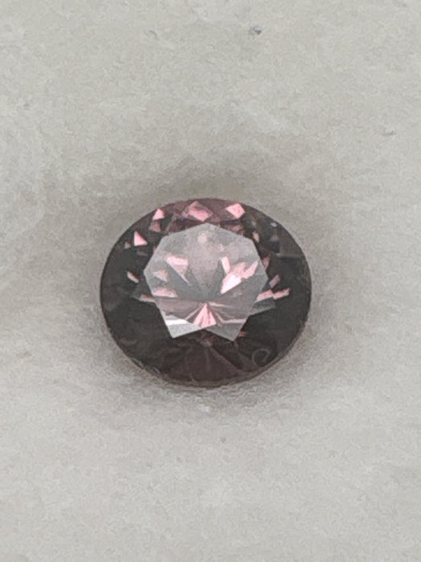
Pink Zircon — 1.55 ct, 6.5 mm Round
A 6.5 mm round that reads darker than “pink” suggests — closer to maroon.
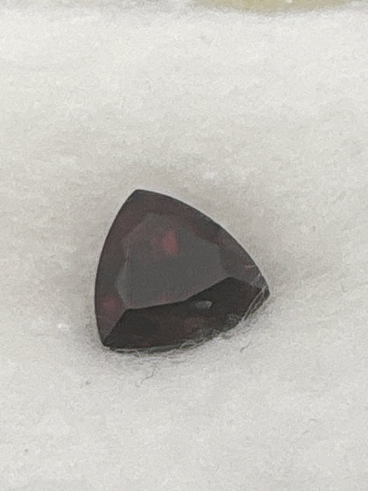
Red Zircon — 3.40 ct, 9 mm Trillion, Labeled Kenyan
A 9 mm trillion in dark reddish-brown; the Kenyan origin claim is unverified.

Aquamarine — Pair of Trillions, Very Pale
Two trillion cuts labeled aquamarine that photograph essentially colorless.
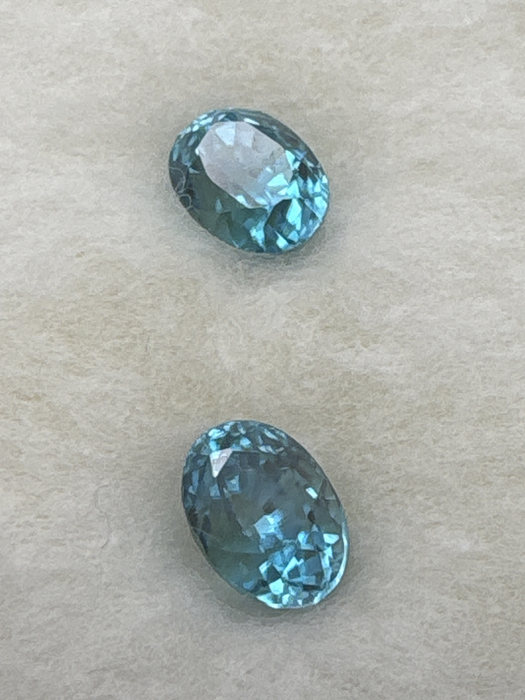
Blue Zircon — Pair of 5.5 x 6 mm Ovals
Two clean teal-blue ovals that match their label exactly.

Blue Zircon — Pair of Fancy Step Cuts
Two teal-blue emerald/step “fancy cut” zircons.
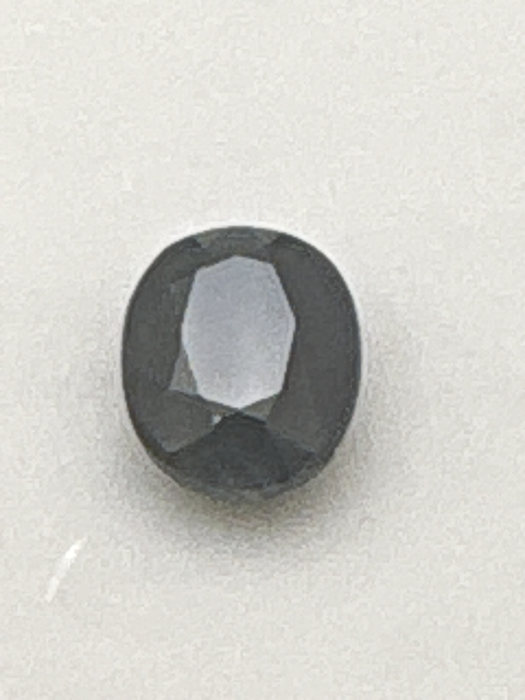
Sapphire — Oval, Labeled Midnight Blue
A very dark blue oval sapphire, near blackish-navy in photographs.
Two Lavender Cabochons — Labeled Star Burma Ruby, Mismatched
Two cabochons labeled star ruby that are lavender-pink, with no clear star.
Hyacinth Zircon — Matched Set of Four 5.5 mm Trillions
Four warm orange-brown champagne trillions, evenly matched.
Rock Crystal Quartz — Colorless Oval
A clean colorless oval of the clearest quartz variety.
Spinel — Pale Grey-Lavender Oval
A pale greyish-lavender oval spinel; the label names no color.
Lilac Spinel — Near-Matched Set of Four Ovals
Four greyish-lilac oval spinels, close but not perfectly uniform in tone.

Golden Scapolite — Matched Set of Four 7 mm Rounds
Four evenly matched pale champagne rounds — the best-matched set here.

Red Zircon — Pair of 6 x 4 mm Ovals
Two dark reddish-brown ovals; the label's plural matches the contents.

Color-Change Garnet — Round
A round garnet labeled color-change; the shift can't be shown in one photograph.
Colorless Oval — Labeled Aquamarine, 2.09 ct
A 10 x 11 mm oval labeled aquamarine that photographs colorless.
White Zircon — Colorless Round
A colorless round with the strong fire that made zircon a historic diamond stand-in.
Color-Change Garnet — 1.71 ct, 8 mm Trillion
The second color-change garnet here, an 8 mm trillion reading brownish-pink.
Demantoid Garnet — Set of Three Rounds, Chris Johnston Label
Three pale yellow-green rounds with strong fire, labeled to a known cutter.

Tourmaline — Grayish-Green Oval
A muted grey-green oval tourmaline.
Garnet — Pair of 9 x 7 mm Barrel Cuts
Two deep red checkerboard barrel cuts, 9 x 7 mm each.
Hyacinth Zircon — Pair of 5 x 7 mm Ovals
Two warm golden-brown champagne ovals, 5 x 7 mm each.
Four Lavender Cabochons — Labeled African Star Ruby, Mismatched
Four cabochons labeled star ruby that photograph lavender-mauve, star unclear.
Peridot — Pale Yellow-Green Round
A pale yellow-green round; peridot's iron content gives it that consistent color.
Color-Change Garnet — Pair of Trillions
The third color-change garnet here, a pair of trillions reading brownish-champagne.

Tourmaline — Labeled Paraiba, Pale Aqua
An oval labeled Paraiba in a pale seafoam aqua, well short of neon saturation.

Oval Stone — Labeled Paraiba, Pale Silvery Grey-Blue
A second Paraiba-labeled stone, this one grey-silver rather than blue-green.
Mixed Lot — ~13 Loose Stones, Unidentified
About thirteen loose stones in many colors and cuts, no per-stone information.
Pale Lilac Oval — Labeled Cuprian Elbaite, Mismatched
Labeled copper-bearing tourmaline but lavender-pink, a color copper cannot produce.
Two Faceted Yellow-Green Stones — Opal Label Does Not Apply
A kite cut and a trillion in olive-green; the box's label describes boulder opal.
Neon Blue Tourmaline — 6.6 x 3.7 mm Baguette
A teal blue-green baguette — the best color match among this lot's Paraiba labels.
Zircon — 5 mm Round, Labeled Imperial Zircon
A dark reddish-brown round with coppery rose flashes.
Zircon — 5 mm Round, Labeled Imperial Zircon (2 of 4)
A second stone from the same reddish-brown zircon product line.
Dark Baguette — Labeled Chrome Tourmaline, Color Unconfirmed
A 10.2 x 6.2 mm fancy cut that photographs near-black, not chrome green.
Zircon — 5 mm Round, Labeled Imperial Zircon (3 of 4)
A third stone from the same reddish-brown zircon product line.
Zircon — 5 mm Round, Labeled Imperial Zircon (4 of 4)
The fourth stone from the same reddish-brown zircon product line.

Mixed Lot — Six Loose Stones, Unidentified
Six assorted loose stones from a working desk: ovals, rounds, a cabochon, a cushion.
Cat's Eye Scapolite — Oval Cabochon, 9–9.9 ct
A taupe cabochon with a clear pale chatoyant band across the dome.
Tanzanite — Three Stones, Two Marquise and One Oval
Three light blue-violet tanzanites with strong sparkle, mixed shapes.

Amethyst — Two Faceted Stones with Gem Data Certificate
A hexagonal step cut and an oval brilliant in medium purple, with certificate.

Garnet — Two Stones with Gem Data Certificate
One near-black rounded stone and one reddish-pink oval, with certificate.
Citrine — 0.96 ct Pear, Set in Gem Data Certificate
A golden-yellow pear cut mounted in its own certificate display window.
Dark Pear-Cut Stone — Specimen Tray, Unidentified
A near-black faceted pear from the 25-slot specimen tray.
Two Colorless Faceted Stones — Specimen Tray, Unidentified
One bright symmetric brilliant and one smaller irregular cut, both colorless.
Smoky Pear-Cut Stone — Specimen Tray, Heavily Included
A translucent grey-smoky pear with visible feathers throughout.
Vivid Red Oval — Specimen Tray, Unidentified
A saturated red oval; not offered or confirmed as ruby.
Two Light Blue Ovals — Specimen Tray, Matching Pair
A clean matched pair of pale blue ovals, likely topaz or aquamarine.
Pale Pink-Mauve Oval — Specimen Tray, Unidentified
A soft dusty rose oval from the specimen tray.
Very Pale Yellow-Green Oval — Specimen Tray, Unidentified
A near-colorless oval with a faint chartreuse tint.
Peridot (Probable) — Vivid Yellow-Green Oval
A saturated olive-yellow-green oval — the most confident call in the tray.
Two Teal-Green Rounds — Specimen Tray, Unidentified
Two round stones of different sizes in a medium-deep bluish green.

Large Deep Green Round — Specimen Tray, Likely Glass or Synthetic
A big, deeply saturated green round that is unusually clean for its size.

Two Vivid Pink-Magenta Stones — Specimen Tray, Unidentified
A round brilliant and a step cut, both raspberry-magenta.
Six Golden-Orange Stones — Specimen Tray, Matched Color
A cluster of six warm amber stones, mostly pear and oval cuts.

Two Colorless Round Brilliants — Specimen Tray, Unidentified
A matched pair of bright colorless rounds; not offered as diamonds.
Light Blue Step Cut — Specimen Tray, Unidentified
A pale blue emerald-cut stone from the specimen tray.
Vivid Red Step Cut — Specimen Tray, Unidentified
A saturated red emerald-cut stone; not offered as ruby.

Two Vivid Red Marquise Cuts — Specimen Tray, Matching Pair
A matched pair of saturated red marquise stones; not offered as ruby.
Deep Blue Step Cut — Specimen Tray, Possibly Glass or Synthetic
A vividly saturated blue step cut that is unusually clean and even.

Two Pearls (Probable) — Specimen Tray, Matched Pair
Two smooth round white-cream beads with the soft sheen of pearl.
Two Deep Green Ovals — Specimen Tray, Possibly Glass or Synthetic
A matched pair of vivid green ovals, unusually clean for their saturation.

Amethyst (Probable) — Large Vivid Purple Pear
A large purple pear showing natural color zoning — a reassuring sign.
Two Different Green Stones — Specimen Tray, Unidentified
A bright faceted oval alongside a duller waxy cabochon — not a pair.
Light Blue Oval — Specimen Tray, Unidentified
A larger pale blue oval from the specimen tray.
Three Pale Green Stones — Specimen Tray, Mixed Forms
A tumbled slab, a small faceted oval and a rough round, all pale green.
Purplish-Pink Emerald Cut — Specimen Tray, Unidentified
A square octagonal step cut in purplish pink-mauve.
Amethyst (Probable) — Large Vivid Purple Trillion
A large clean purple trillion — the final slot in the specimen tray.
No stones match that search.
The collection is offered as one complete lot. Terry VanWormer can answer questions about any stone in it.
Click here to inquireor email Terry directly at maxrebo34@gmail.com